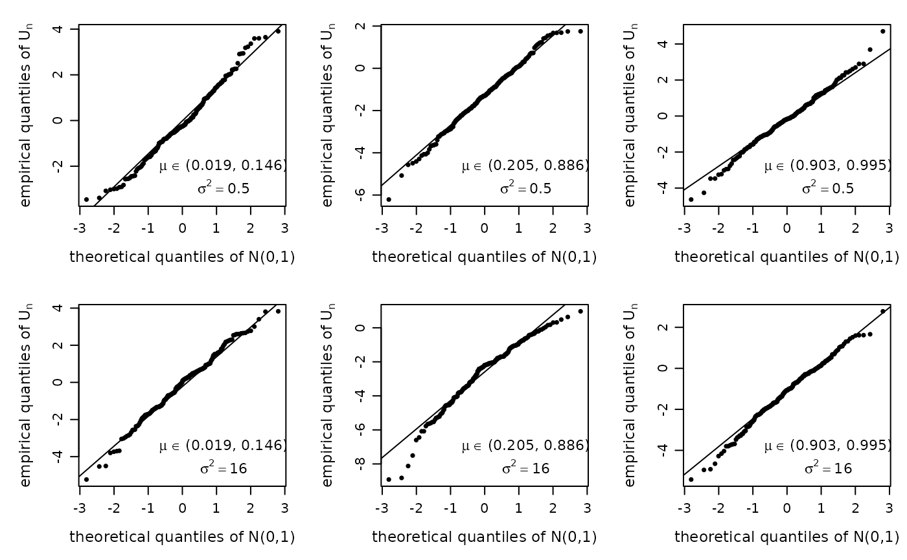

Reproduces Figure 1 of Ospina et al. (2026): QQ-plots and histograms of the asymptotic \(U_n\) statistic against the standard normal, for three ranges of \(\mu\) and two dispersion levels (\(\sigma^2 \in \{0.5, 16\}\)). Also returns the table of characteristic measures (mean, variance, kurtosis, skewness).
Usage
paper_fig1(n = 40, R = 1000, sigma2 = c(0.5, 16), seed = 185, plot = TRUE)Arguments
- n
Sample size. Default 40.
- R
Number of Monte Carlo replications. Default 1000.
- sigma2
Dispersion values to study. Default
c(0.5, 16).- seed
Random seed for the (fixed) covariate design and the MC loop. Default 185 (chosen to match the \(\mu\) ranges in the paper).
- plot
Logical; produce the QQ and histogram panels. Default
TRUE.
Value
Invisibly, a list with Un (named list of \(U_n\)
vectors) and measures (data frame of characteristic measures).
Details
The true \(\beta\) vectors are those of Table 1 of the paper, chosen so that the fitted means fall in \((0.019, 0.147)\), \((0.205, 0.886)\) and \((0.903, 0.995)\). Covariates are \(x_{ti} \sim U(0,1)\), generated once and held fixed.
Examples
# \donttest{
res <- paper_fig1(n = 40, R = 200) # R = 1000 in the paper

print(res$measures)
#> sigma2 mu_range Mean Variance Kurtosis Skewness
#> 1 0.5 low -0.108 2.344 2.829 0.240
#> 2 0.5 mid -1.316 2.187 3.000 -0.204
#> 3 0.5 high -0.179 2.149 3.492 -0.017
#> 4 16.0 low -0.124 2.773 3.026 -0.232
#> 5 16.0 mid -2.615 3.206 3.764 -0.765
#> 6 16.0 high -1.177 2.075 3.045 -0.273
# }